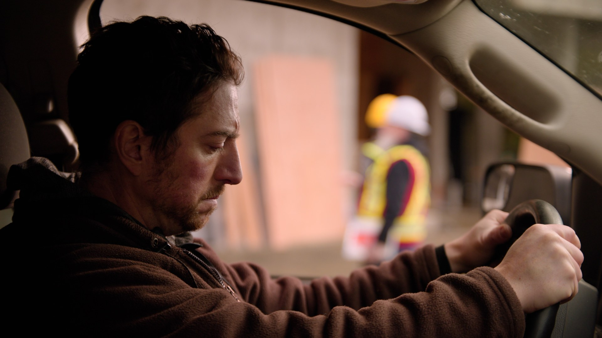
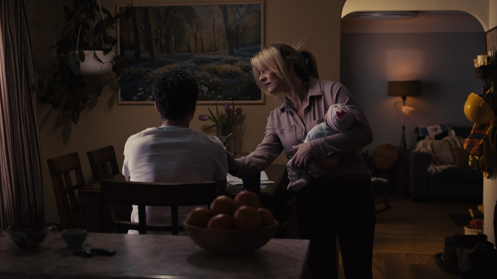
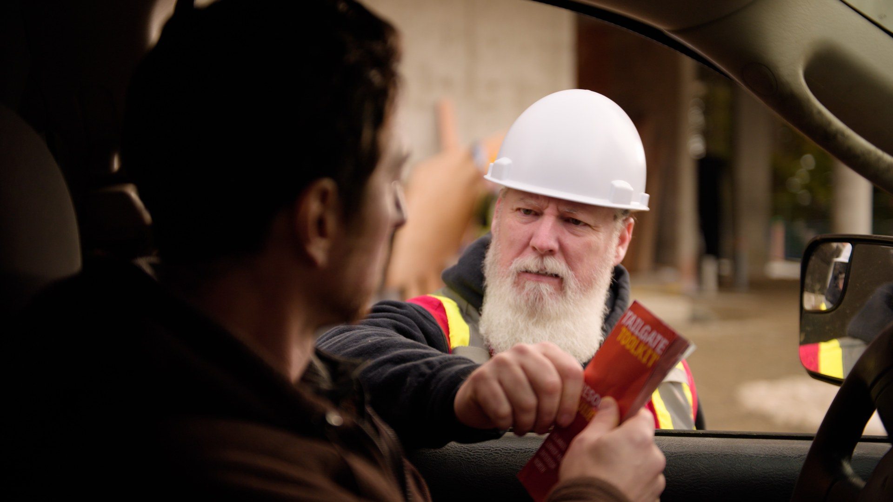

When the Vancouver Island Construction Association (VICA) approached us to collaborate on their Tailgate Toolkit campaign, we knew it was an opportunity to create something meaningful. The campaign's purpose was clear: to support mental health, substance-use awareness and harm reduction in BC's construction community, a sector where conversations about well-being are often the hardest to start.
Our task: tell a story that felt real. No actors in hardhats pretending to care, an authentic portrayal of what many workers actually face, and the hope that help is within reach.
One quiet morning
From the very start, the team wanted something cinematic, raw and emotionally honest. The concept built itself around a single morning on a construction site, a moment of quiet that opens a window into the main character's struggles.
As the sun rises over a job site, a pickup truck sits idling in the early light. Inside, a construction worker grips the steering wheel, eyes distant. The hum of light construction sound blends with faint early-morning atmosphere, the calm before the storm.

Through a series of flashbacks, we explore the pressures many tradespeople carry behind the scenes: the crying baby in a dark bedroom, the closed bathroom door on a child's birthday, the argument over unpaid bills, the sound of an ambulance leaving a job site. Each moment builds in intensity, visually and sonically, until the noise becomes overwhelming, how easily stress and pain can spiral out of control.

Then, silence. Back in the present, the worker still grips the wheel, until his supervisor gently places a hand on his arm. The noise fades. He can finally breathe. The supervisor hands him a pamphlet, and the two sit on the truck's tailgate, talking quietly, as the picture fades to the closing line:
"Tailgate Toolkit. Free resources at your fingertips. A message from the Broadcasters of BC."

Shot real: locations, sound, colour
We shot on Vancouver Island, using authentic construction environments, local homes and real-world lighting to keep the honesty and grit. Every department worked with sensitivity to the campaign's tone:
- Performance direction focused on subtle, genuine emotion rather than dramatization.
- Sound design became a storytelling tool: the overlapping noise of life's stresses giving way to silence at the moment of support.
- Colour shifted from cold, muted tones in the flashbacks to warmer, natural light in the present, mirroring the message of finding hope and grounding.
The story became the emotional anchor for both the TV commercial and its companion radio spot. For radio, the same emotional cues carried through layered soundscapes and a strong, steady voiceover guiding listeners toward help.
A full year on 61 stations
After production wrapped, the campaign was broadcast for a full year across 61 radio and television stations throughout British Columbia, operated by eight major ownership groups, including Corus Entertainment, Pattison Media, Vista Radio, Stingray Radio, CHEK Media, South Asian Broadcasting and several independent regional broadcasters.
That province-wide distribution, supported through the BCAB Humanitarian Award, put the message in front of the people who needed it most: construction workers, site leads and their families, in communities big and small across BC. It's the reach side of what we talk about in We Launch: great work matters most when it's actually seen and heard.
What this project taught us
- Storytelling can save lives. Handled with honesty, even a 30-second spot can open space for empathy and awareness.
- Picture and sound work best together. What you see and what you hear should both move people, and point them toward help.
- Collaboration is everything. Working with VICA and the Tailgate Toolkit team was a true partnership, grounded in purpose and trust.
- Reach multiplies impact. The most thoughtful story in the world matters most when it's seen widely, and this one was.
The team
A project like this is carried by every name on the call sheet. Client and partner: VICA, Vancouver Island Construction Association.
- Director
- Jackie Taylor
- Assistant Director
- Sean Bellerby
- Producers
- Jackie Taylor, Chris Chisholm (Volare Media)
- DOP / Cinematographer
- Michael Fisher
- 1st AC
- Chris Chisholm
- 2nd AC / BTS
- Joel Smith
- Grip / Rigging
- Emma & Lance, Grip Victoria
- Art Director / Set Design
- Chris Loran
- Sound Mix / Boom Op
- Dave Goossen
- Gaffer / LX
- Nico Wainer
- Hair / Makeup
- Dayna J.
- Editor & Colourist
- Chris Chisholm
- Audio Recording / Radio Edit
- Jonathan Wright (Untold Forge)
- Voice Actor
- Trevor Botkin
- BTS / Stills
- Shane O'Leary
- Script / Writer
- Jackie Taylor
- Cast
- Pete MacDonald (Father/Worker), Trevor Botkin (Supervisor), Farrah Simpson (Wife/Mother), Derek Lewers (Paramedic #1), Amy King (Paramedic #2), Aubrey Paquette (Daughter)
The Tailgate Toolkit campaign is more than a commercial. It's a call for understanding and compassion within one of BC's hardest-working communities. Learn more, or find free resources, at thetailgatetoolkit.ca.
More from the journal: How much does video production cost in British Columbia?